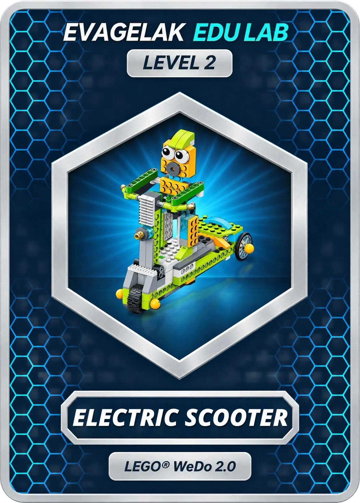
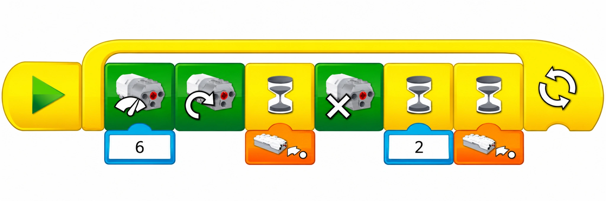

ΔΙΑΔΡΑΣΤΙΚΟ QUIZ · LEGO WeDo 2.0
Electric Scooter
Αναγνώρισε τις πραγματικές εντολές του προγράμματος, σκέψου τι κάνει κάθε βήμα και απάντησε στις 10 ερωτήσεις. Με την ολοκλήρωση του quiz κερδίζεις τη συλλεκτική κάρτα LEVEL 2.

Δες το πραγματικό πρόγραμμα του Electric Scooter

Το quiz χρησιμοποιεί την ίδια πραγματική εικόνα προγράμματος που ανέβασες, χωρίς αλλοιώσεις.